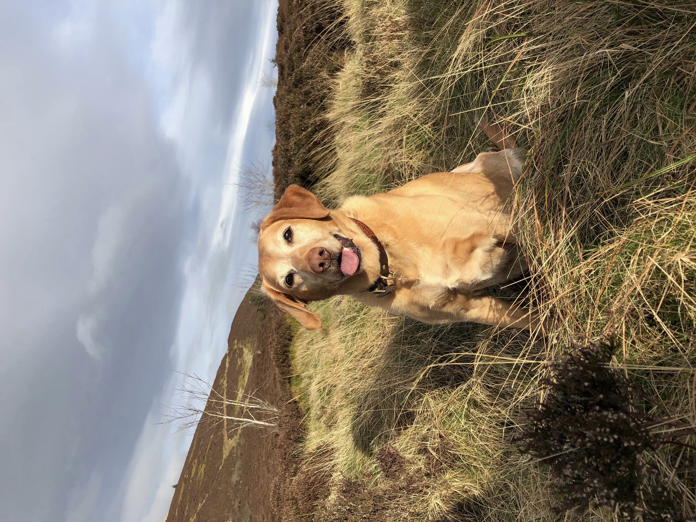
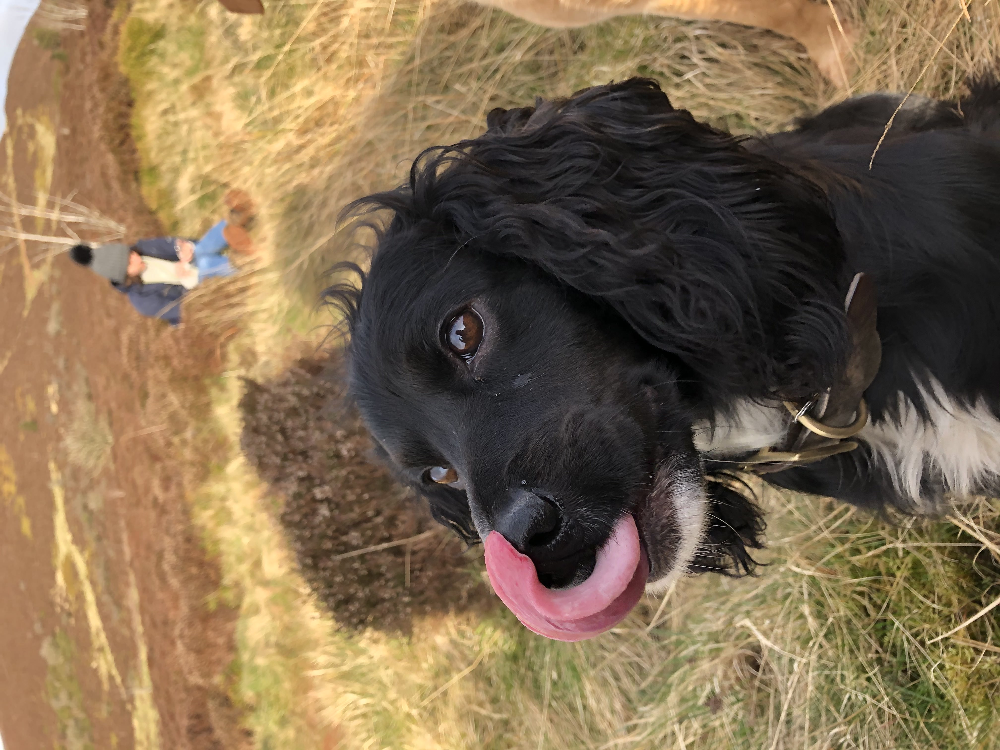

|
|
Common Breeds | Rare Breeds | Dogs of Note | Gallery | Let's help some dogs |
Maya |
Bertie |
Dileas |
| Information | Gallery | Information | Gallery | Information | Gallery |
MayaMaya is a 9 year old labrador, of a working strain. She was yellow, but she is getting very white around her face, which makes her look a lot older than she is. We got Maya when she was about two or three years old as her previous owner couldn't look after her anymore. She loves toys, and will happily tear anything up if allowed to. Maya is fairly obedient, and is great on or off the lead. She will, however, completely ignore you if she can get away with it. She has a variety of tricks, such as paw, play dead, spin, speak, and car (meaning she moves to the side of the road), which she will enthusiastically cycle through at the merest hint of a biscuit. She's getting a bit of arthritus in her front shoulder, so she occasionally struggles getting into the car, but she still loves going for walks and sitting in the boot while we go for a drive. Her favourite place to be is on someone's bed, preferably a double. Your presence she can take or leave. |
 |
BertieBertie is six year old cocker spaniel. We got him when he was about four years old from a local gun dog training place. Quite nervy and very small, he was bullied by the other dogs and was not shown much attention by the owners, and so when he came to us he was very subdued and timid, flea-ridden, and absolutely terrified of leaving the house. He made huge strides when shown some care - he rapidly became a cheerful little dog. He loves to be sitting on someone's knee, or curled up next to Maya. His tricks so far only include sit and spin, although he's getting very adept at a good show of deafness when it suits him. The prettiest of all our dogs, he gets away with absolute murder, and because he's always wagging no one minds that much. |
 |
DileasDileas is the newest addition to the family, and is another black cocker spaniel. She's actually Bertie's niece, which explains why both of them are so minute. She's just over a year old, and so is bursting with energy - she's the best of all three at recall, and her fetch game is definitely getting there. She also knows sit and spin, and we've made great progress with getting her to howl on command, which no doubt we will regret in years to come. Impish but cute, she loves to play with Bertie and Maya, and will quite happily disrupt an evening in front of the fire by winding them up. Luckily, she also loves a cuddle, and when she sits still for long enough will fall asleep on anything. |
.jpg) |